The DATA
The data for this study was compiled from these 5 video parts that document about 5 years of Yuto's street skating:
- Nike SB | Yuto Horigome | April Skateboards Pro Part - May 2019
- The Yuto show ! - June 2021
- Yuto Horigome's "Spitfire" Part - Dec 2021
- Nike SB | Yuto Horigome in Tokyo - Aug 2023
- Yuto Horigome's "April" Part - Dec 2023
You can dig into the data and check the full analysis on Github here.
The Tricks
In these 5 parts, Yuto performed 150 tricks total. 84% of the tricks were only done once, making his bag of tricks quite diverse and unique. These are the 24 tricks that were repeated more than once:
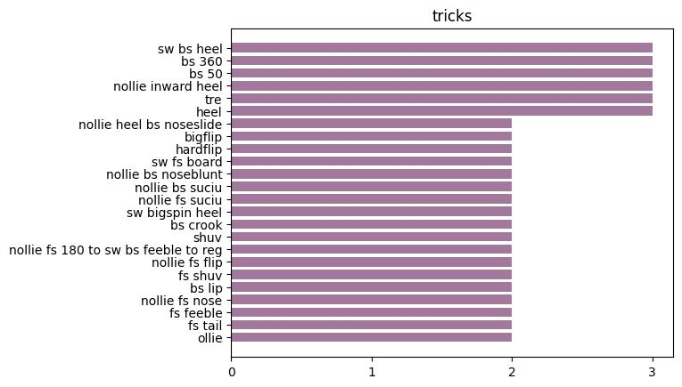
The diverse selection of tricks is one of the reasons why it’s just so fun watching Yuto skate. You don’t know what’s coming next. He doesn’t have a single "go-to" trick. He’s got the talent to "go-to" all the tricks.
Trick notes:
- There are a lot of nollie tricks… we’ll get into that later.
- Yuto has never filmed a kickflip! (by kickflip I mean just a regular straight up kickflip on flat or down a gap).
- Make no mistake, Yuto can kickflip.
He kickflipped out of a manual down stairs in his Spitfire part.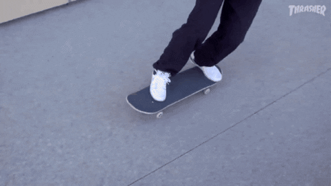
- He has also switch flipped down a set in The Yuto Show part.
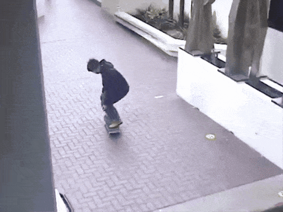
The Obstacles
So Yuto has got all the tricks on lock. Let's see where he’s locking them:
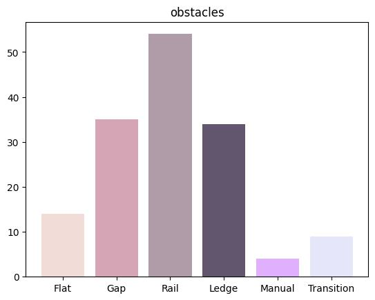
It’s no surprise that Yuto loves rails. But he is no rail jock.
- 54 rails skated across the 5 video parts. (36% of trick total)
- 35 gaps (combining gaps, drops, and stair sets).
- 34 ledges (including hubbas).
You’ll notice that for a skater who’s extremely techy, Yuto doesn’t do a lot of manuals. We know from the abundance of rails and big gaps that Yuto can overcome fear and handle the hefty landings and slamming potential, but perhaps his manual patience is one of the few areas where he can stand improvement.
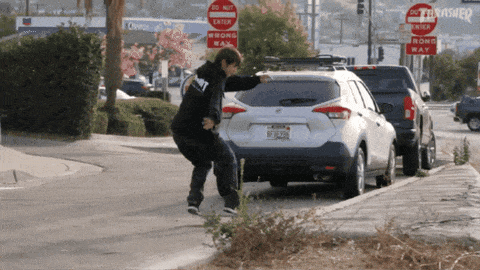
And just a PSA that Yuto rips at vert. We need more vert footage.
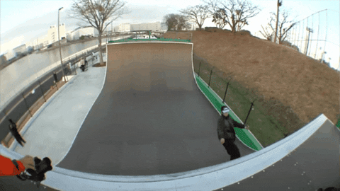
The Stances
Witness Yuto's stance-count leaderboard:
- Regular tricks: 60
- Nollie tricks: 50
- Switch tricks: 33
- Fakie tricks: 7
- There is only a 10 trick difference between regular and nollie.
- Fakie didn’t even make it past double digits.
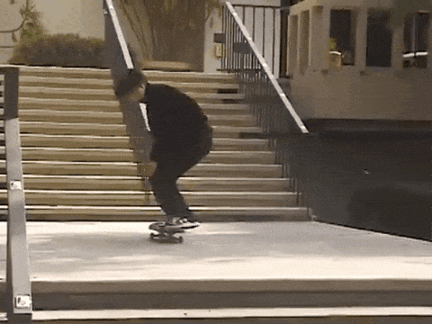
- When you group stance counts into natural (regular and fakie) and opposite-footed (switch and nollie) stances, Yuto executes opposite-footed 55% of the time.
Stances by video part
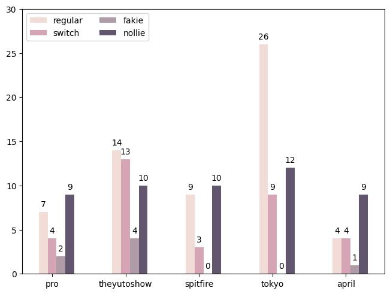
Some stance by video part observations:
- Nollie is Yuto's most skated stance in 3 out of 5 parts.
- His Tokyo video has the most regular tricks by a lot.
- Yuto doesn’t skate fakie at all in his Spitfire and Tokyo videos.
Stances by Obstacle
Presented here is more evidence that sets Yuto apart from everyone else as a remarkably well rounded skater, regardless of terrain. Even the small sample size of manual and transition tricks are feature clips from both regular and nollie stances.
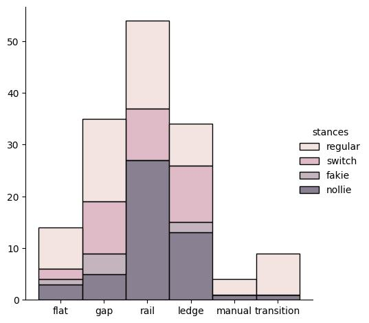
It should not come as a shock to you that Yuto’s favorite thing to do on a skateboard is to skate rails nollie! But what is a bit more surprising, even knowing the stance data thus far, is that for all of Yuto’s distinctly diverse rail trickery (45 unique rail tricks in the 5 parts), there is not a single fakie rail trick in the dataset.
Taking a closer look, these are the 8 rail tricks repeated (each done exactly twice):
- Nollie Frontside Suciu
- Nollie Backside Suciu
- Backside Crooked Grind
- Backside Lipslide
- Nollie Frontside Noseslide
- Frontside Feeble
- Nollie Frontside 180 to Switch Backside Feeble to Forward
- Switch Frontside Boardslide
The Flip Tricks
- 23 kickflip variations vs 25 heelflip variations
- Surprisingly, Yuto in total has 17 flip in or flip out tricks;
- 12 flip ins (5 kickflip variations, 7 heelflip variations) executed on 3 rails, 7 ledges, and 2 manuals
- 5 flip outs (3 kickflip variations, 2 heelflip variations) on 4 ledges and 1 manual
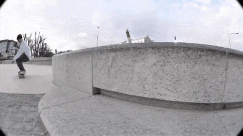
- Everyone loves switch heelflip variations, including Yuto. 7 switch heel variations + 12 nollie heel variations
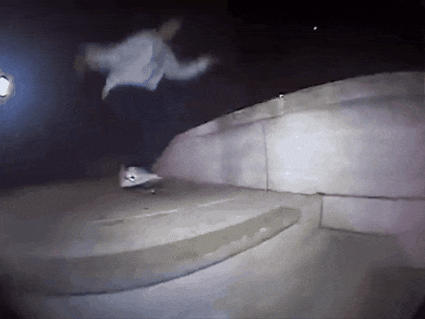
- Yuto’s heelflip-ins are no joke. Nollie heelflip noseslides, maybe with a bigspin out down Clipper, or a nollie bs 270 heel bs board down a handrail.
The Rotations
Yuto loves spinning into rails (and sometimes ledges). From the count of 89 rail/ledge tricks:
- 180’d into a grind or slide 18 times (14 rails, 4 ledges)
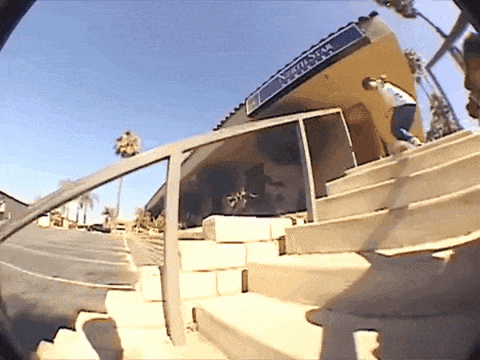
- 180’d out of a grind or slide 11 times (7 rails, 4 ledges)
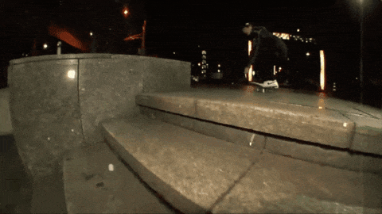
- 180’d in and out 6 times (all rails)
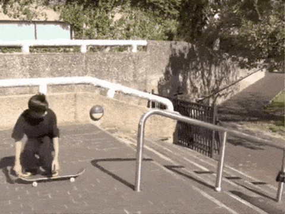
- Oh yeah, don’t forget he 270’d into a rail 5 times.
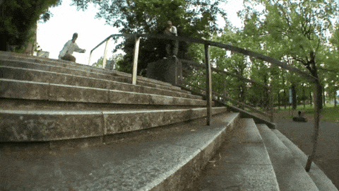
The Street to Contest Analysis
Yuto's greatness lies not only in his advanced street skating video footage, but how he concurrently released those videos while dominating the contest circuit. How do these two venues for skateboarding diverge, overlap, and otherwise inform each other?
Let's compare openers, enders, and other unique tricks in Yuto’s video parts to the tricks in his contest performances that helped make him a literal, quantifiable champion.
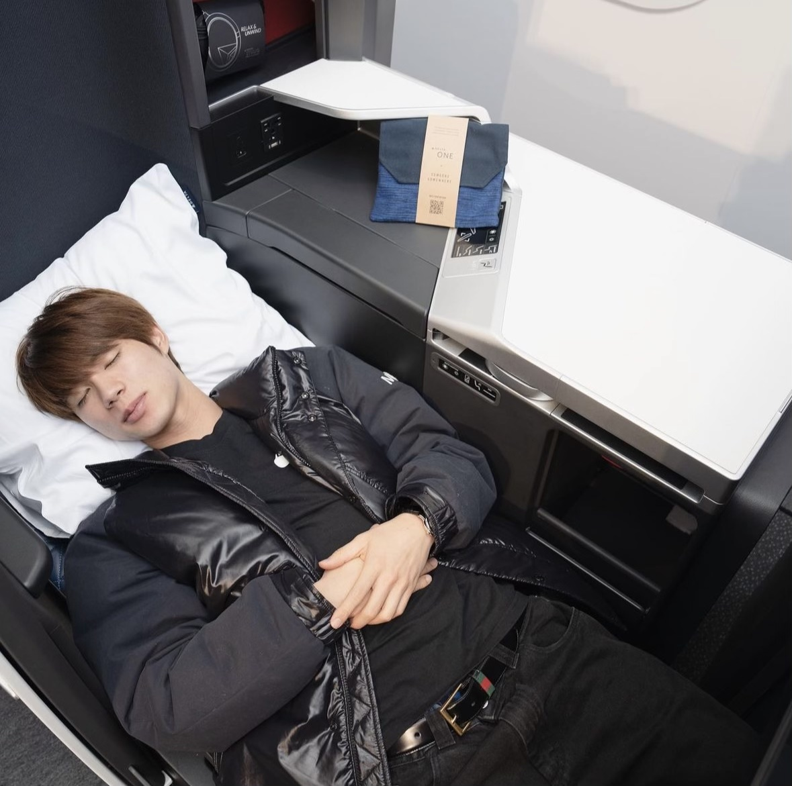
The Contest Data & Methodology
Data was taken from competition events that fall within the same timeframe as the 5 video parts we just analyzed; starting with the XGames on June 1, 2019 up to Tampa Pro on April 7, 2024. View the Yuto Contest dataset here.
I tried to account for all major competitions between June 1, 2019 to April 7, 2024, but the dataset is not an exhaustive list. Additionally, events where Yuto did not place 3rd or higher were excluded. SLS Knockout Rounds, an event to decide which skaters compete in SLS Finals, were not logged. Lastly, only the highest scoring run was logged as is standard contest procedure. If notable, some events will be mentioned where Yuto did not rank 3rd or higher, but said event is not logged.
Notable Video Part Tricks Seen In Competition
Nollie Backside Suciu Grind
(the 2nd to last trick in Yuto’s 2019 April Pro Debut part)
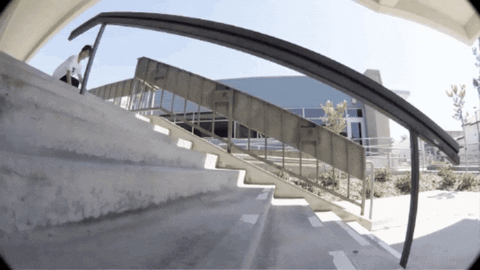
This trick was landed only once in competition, at SLS Sydney 2023, where Yuto placed 5th overall.
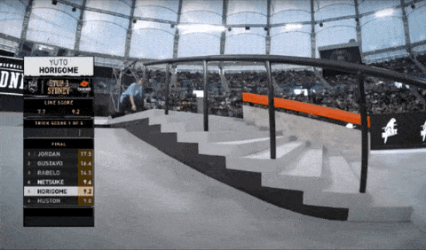
(Yuto also bailed this trick to lose to Nyjah in the Best Trick section at SLS São Paulo 2019.)Nollie Frontside 180 to Switch Backside Feeble Grind to Normal
(the ender in Yuto’s 2019 April Pro Debut part)
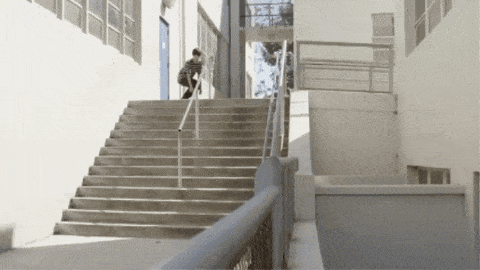
Done casually as the first trick in runs during both SLS São Paulo 2019 and SLS Tokyo 2023.
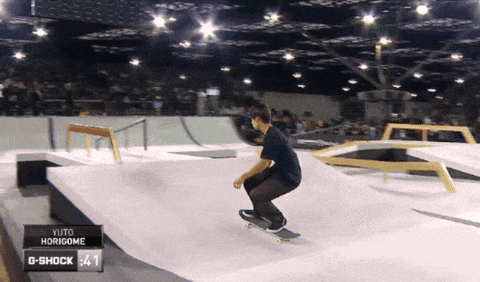
(Sure the rails were smaller, but to do that trick in a contest run. With style. Damn.)Backside Sugercane
(ending rail montage in 2021's The Yuto Show)
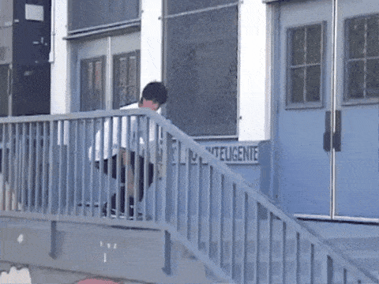
Landed mid-run on the main obstacle to secure 1st place at XGames 2023.
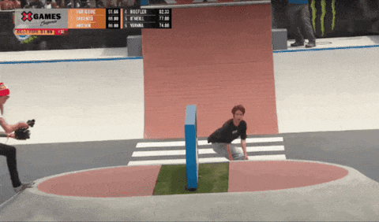
Nollie Frontside Suciu Grind
(also in the ending rail montage in 2021's The Yuto Show)
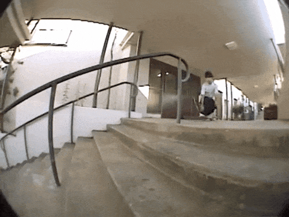
Landed on final attempt of ‘Best Trick’ at 2020 Tokyo Olympics for Gold!
(also notable as the only time Yuto has shown emotion in a contest setting). This is Yuto’s contest dagger; he's stomped it 4 different times in ‘Best Trick’ portions of contests.
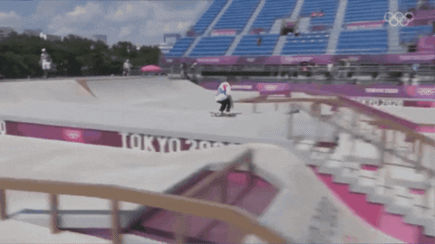
Nollie Backside 270 to Backside Noseslide
(also from The Yuto Show, 2021)
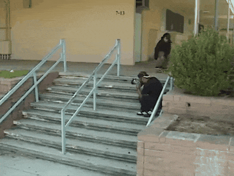
This beauty has secured Yuto wins in SLS L.A. 2019, Street World Championship Italy 2021, SLS Seattle 2022, XGames Ventura 2023, and SLS Nevada 2024.
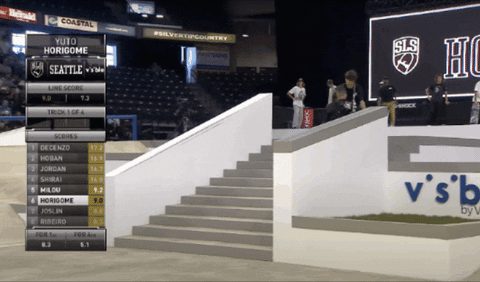
Yuto’s ability to pull bangers from his video parts and consistently land them in a contest to win is another reason Yuto is one of the best skateboarders alive.Nollie Backside 180 to Switch Frontside Smith Grind
(opening trick of 2021 Spitfire part)
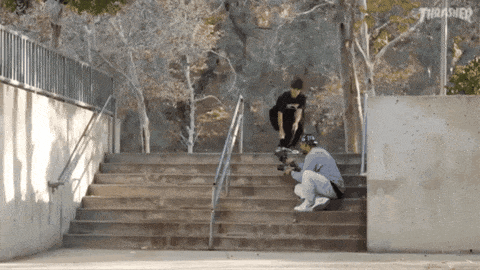
Landed in Best Trick section of SLS Jacksonville 2022, giving Yuto an insurmountable lead in the contest.
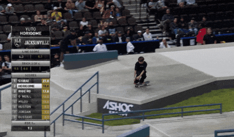
Nollie Frontside 270 to Switch Backside Lipslide
(the balaclava ender from Spitfire part)
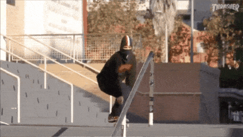
A staple in Yuto’s contest performance, landed a sum of 14 times in contest situations.
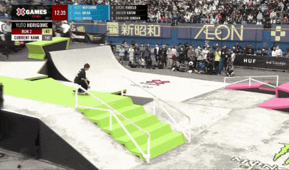
From the Hollywood 16 to having it on lock is another reason why Yuto is so good at skating rails nollie.Nollie Frontside 270 to Switch Backside Tailslide
(from the ending rail montage in Nike's 2023 Yuto in Tokyo part)
A step up from the previous trick, landed 4 times in Best Trick (and once with a bigspin out in XGames 2019 best trick jam).
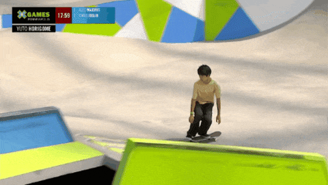
Switch Treflip Lipslide to Normal
(also from the Yuto in Tokyo ending rail montage)
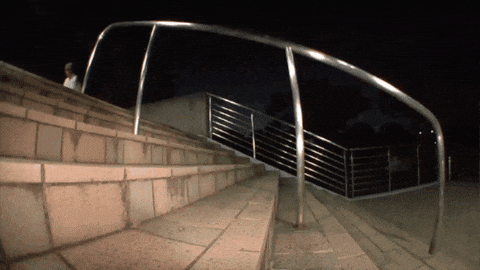
Yuto has landed this 2 times in Best Trick and then, for good measure, once to end a competition run.
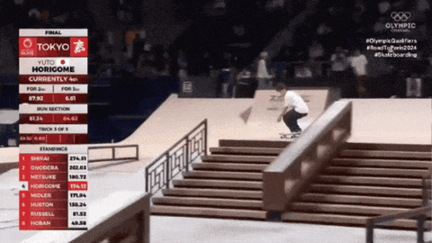
Notable Street Tricks Not Seen In Competition... Yet
(The Yuto Show part ender)
Yuto attempted this trick 4 times to normal at SLS Sydney 2023 but landed none, resulting in a 5th place finish.
Nollie Backside 270 Heelflip to Backside Boardslide
(Yuto in Tokyo part ender)
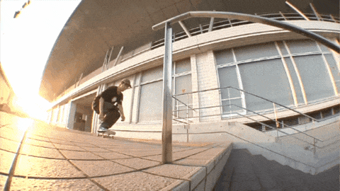
The 2023 SLS Trick of the Year.Nollie Late Front Foot Flip to Backside Noseslide
(2023 April part ender)
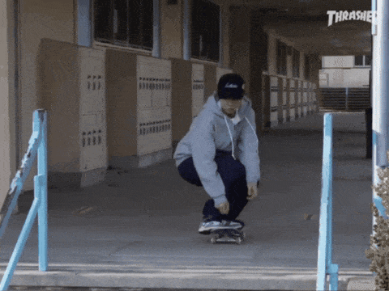
Notable Yuto Contest Tricks Not Yet Seen In the Streets
(landed in SLS Tokyo 2023)
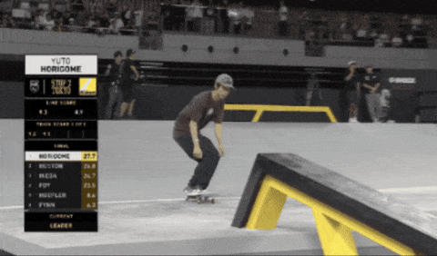
Nollie Backside 270 to Backside Bluntslide
(2023 Tampa Pro ender)
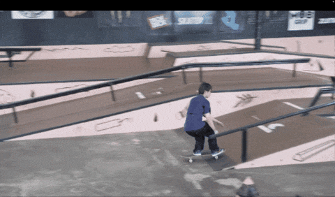
Nollie Late Front Foot Flip to Backside Boardslide
(2024 Tampa Pro ender)
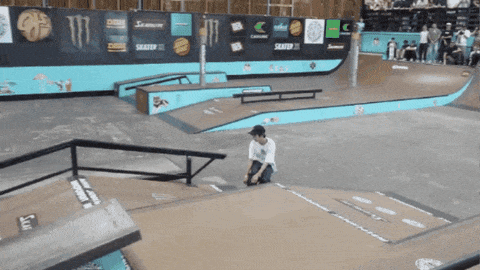
Update from the 2024 Budapest Olympic Qualifiers
Revenge of the Nollie Backside 270 to Backside Bluntslide
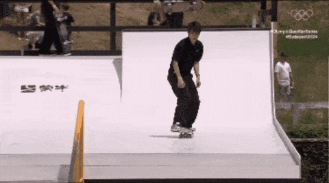
Yuto took his 2023 Tampa hammer to the hefty rail at the final Olympic Qualifying event to secure first place. When you consider that anything less than a total victory in this event would've kept Yuto for attending the 2024 Olympics, we can forgive Yuto for showing a little bit of emotion on this one.
Some other notable progressions we observed during this event:
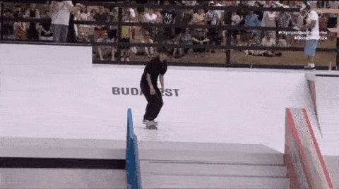
Yuto landed the nollie backside 180 nosegrind on the gap to rail for his opening attack in the Best Trick section. This could be considered a 'safety' version of his signature nollie bs 180 Suciu, but without the final revert - a trick that has foiled him in competitions before.
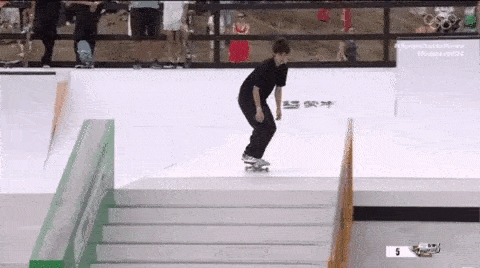
What have we here in the Run section of the competition? Yuto's infamous nollie fs 180 to Suciu handrail banger. That's right, he's progressed to doing these in his runs now.
So what does Yuto have stashed for the upcoming Paris Olympics? In addition to the nollie 270 bluntslide, he threw out a couple nollie late front foot flip attempts. 4PLY predicts that this trick, on a substantial handrail, will be what makes (or breaks) Yuto into an undefeated Gold Medal olympian.
We'll see you in France (from behind our computers at home).
Contest Trick Analysis
Because why not, let's briefly check Yuto’s most common competition tricks for both 'Run' and 'Best Trick' sections. (This sections does not include the Budapest Qualifyers).
59 total unique tricks have been executed in ‘Run’ sections of contests. These 25 were repeated more than once.
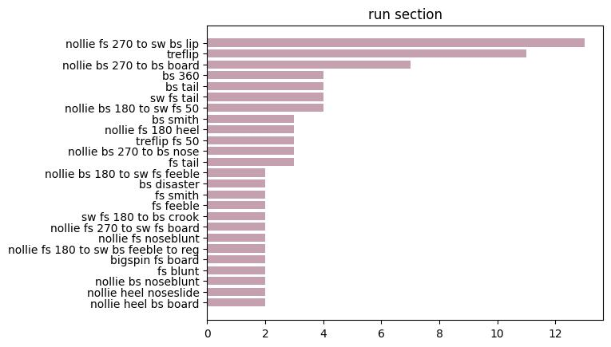
7 tricks were repeated more than once (out of 13 total unique tricks) in ‘Best Trick’ competition. Only 3 of these tricks are not nollie.
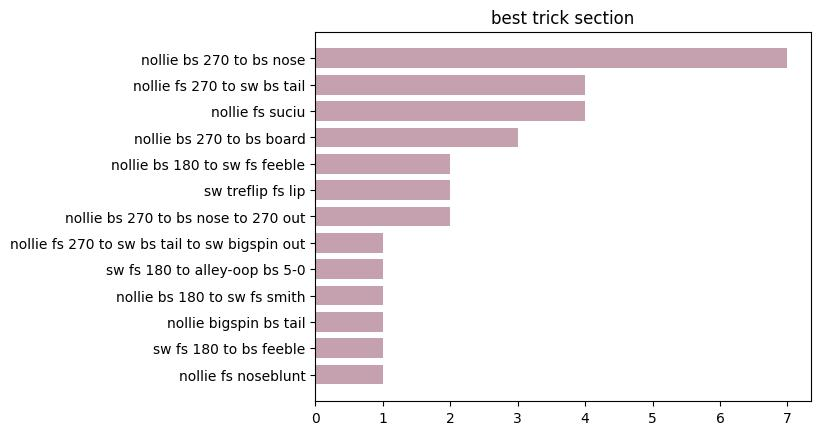
Now looking at Yuto's stance counts during competitions as grouped by obstacle type:
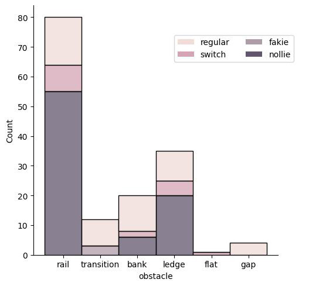
It’s important to note that the scoring system in modern contest structures cater towards handrail skating, especially in the 'Best Trick' section. These typically default to a handrail trick contest.
Another way to look at this is through percentages.
Across the 5 video parts:
- Yuto skates rails nollie 50% of the time
- Yuto skates nollie overall 33%
In competition:
- Yuto skates rails nollie 68.8% of the time
- Yuto skates nollie overall 53.3%
Factor in the rotations; Out of 111 competition rail/ledge tricks:
- 270’d into a grind or slide 43 times (35 into rails, 8 into ledges)
- 270’d out a grind or slide 2 times (rail only)
- Yutornado’d (270’d in and out) 2 times (rail only)
- 180’d into a grind or slide 23 times (10 into rails, 13 into ledges)
- 180’d out a grind or slide 9 (7 out rails, 2 out ledges)
- 180’d in and out 8 times (6 rails, 2 ledges)
If all these statistics are making your brain do a Yutornado, here is a final stat that completely defines Yuto Horigome as a generational skateboarding champion:
Yuto has won 14 of the 21 contests logged for this analysis. In an era where so many skaters demonstrate unreal technical consistency, a time of "everyone can do everything", Yuto still captures the top spot 67% of the time.
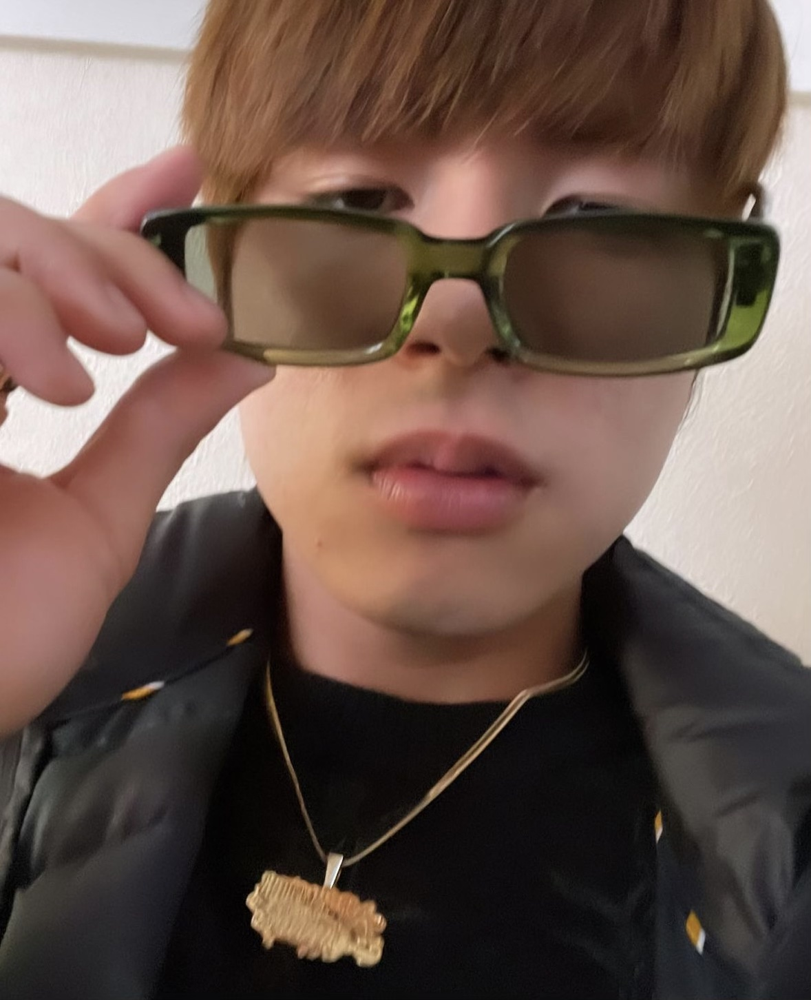
But does Yuto’s nollie, spin, and handrail preferences and skills happen to be well suited towards victorious contest performances, or does the necessity of being good at nollies, spins, and handrail skating inform what tricks he practices and thus chooses to try while filming in the streets? If contests heavily rewarded no-comply tricks or manuals, what would these Yuto charts look like?
If anybody out there knows Yuto and speaks Japanese, make sure to ask him for us.
Drinks are on us.